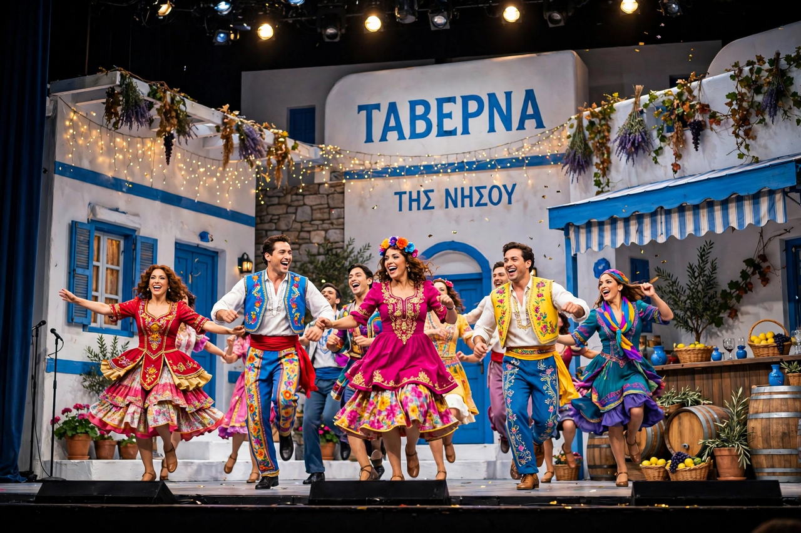

Mamma Mia!
| Mamma Mia! | |
|---|---|
 | |
| Music | Benny Andersson, Björn Ulvaeus |
| Lyrics | Benny Andersson, Björn Ulvaeus |
| Book | Catherine Johnson |
| Basis | Songs of ABBA |
| Premiere | 6 April 1999, Prince Edward Theatre, London |
| Productions | West End (1999), Broadway (2001), numerous international tours |
Mamma Mia! is a jukebox musical written by British playwright Catherine Johnson, based on songs recorded by the Swedish pop group ABBA and composed by Benny Andersson and Björn Ulvaeus, former members of the band. The title is taken from ABBA's 1975 hit "Mamma Mia". The story, set on a fictional Greek island, follows a young bride-to-be who invites three men from her mother's past to her wedding, hoping to discover which one is her father.
Plot
On the Greek island of Kalokairi, twenty-year-old Sophie Sheridan is about to marry Sky. Having found her mother Donna's old diary, she secretly invites three possible fathers — architect Sam Carmichael, banker Harry Bright and travel writer Bill Austin — to the wedding at the taverna Donna runs. Donna, reunited with her old bandmates Rosie and Tanya, confronts her past as the men each realise why they have been summoned. Amid a bachelorette party, a beachside confrontation and the wedding itself, Sophie decides to find herself first, while Donna and Sam finally marry. The show closes with a megamix encore of "Mamma Mia", "Dancing Queen" and "Waterloo".
Productions
Produced by Judy Craymer — who first proposed the concept to Andersson and Ulvaeus in the 1980s — the musical premiered in London's West End on 6 April 1999 and transferred to Broadway in 2001, where it ran for nearly fourteen years and more than 5,700 performances. It has been staged in dozens of countries and languages, seen by well over 60 million people, and grossed billions of dollars worldwide, making it one of the most successful musicals in history. A London revival has continued at the Novello Theatre.
Film adaptations
The 2008 film adaptation, directed by Phyllida Lloyd, starred Meryl Streep as Donna and Amanda Seyfried as Sophie, with Pierce Brosnan, Colin Firth and Stellan Skarsgård as the three fathers. It became the highest-grossing live-action musical film of its time. A sequel, Mamma Mia! Here We Go Again (2018), interweaves Donna's youth with the present-day cast and added Cher to the ensemble.